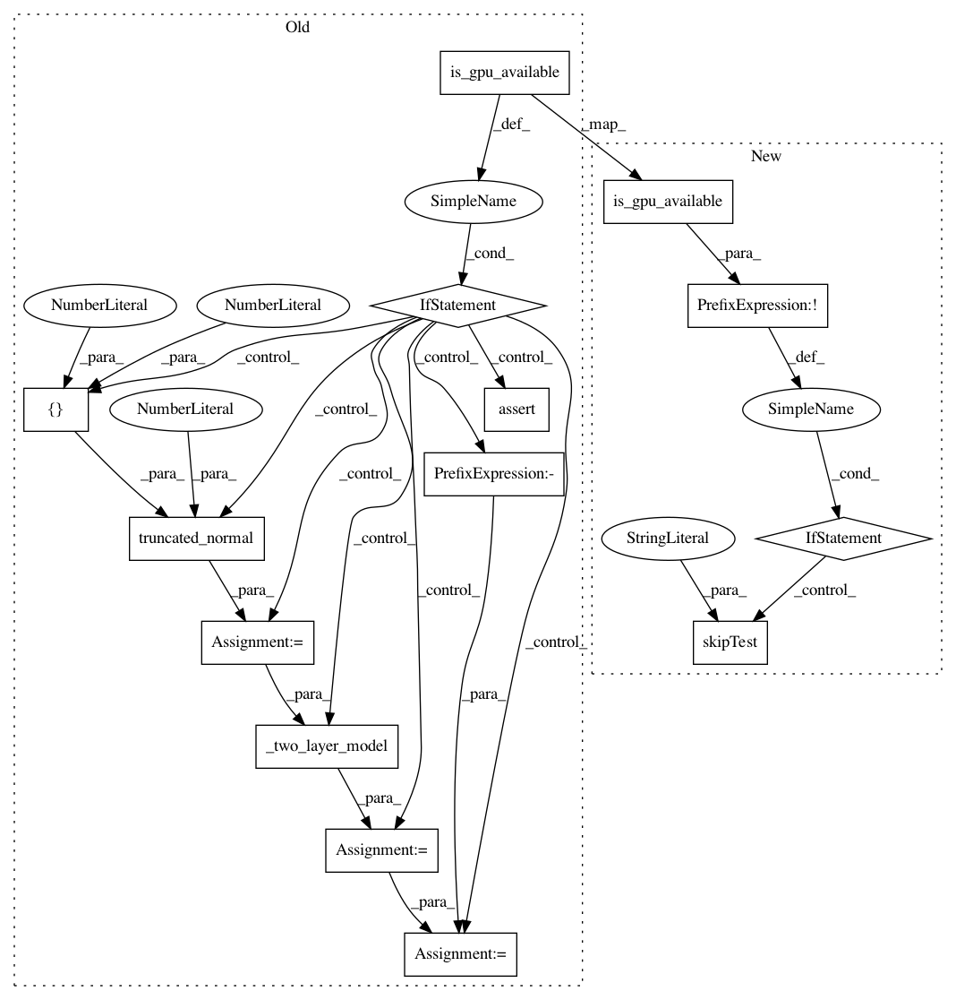

09640bc683a23130c29ba4ab6dc53e20c2a48fa5,tensorflow/python/grappler/layout_optimizer_test.py,LayoutOptimizerTest,testConv3DBackpropInput,#LayoutOptimizerTest#,1432
Before Change
@test_util.deprecated_graph_mode_only
def testConv3DBackpropInput(self):
if test.is_gpu_available(cuda_only=True):
random_seed.set_random_seed(0)
x = random_ops.truncated_normal([1, 784], seed=0)
conv = _two_layer_model(x)
x_3d = array_ops.reshape(conv, [-1, 4, 14, 14, 1])
filters = random_ops.truncated_normal([2, 2, 2, 1, 1], seed=0)
strides_val = [1, 1, 1, 1, 1]
shape = array_ops.shape(x_3d)
conv3d_grad = gen_nn_ops.conv3d_backprop_input_v2(shape, filters, x_3d,
strides_val, "SAME")
output = array_ops.identity(conv3d_grad)
with session.Session(config=_get_config(False)) as sess:
output_val_ref = sess.run(output)
with session.Session(config=_get_config()) as sess:
metadata = config_pb2.RunMetadata()
output_val = sess.run(output, run_metadata=metadata)
nodes = []
num_transposes = 0
for node in metadata.cost_graph.node:
if _is_transpose(node.name):
num_transposes += 1
nodes.append(node.name)
expected_num_transposes = 2
self.assertEqual(expected_num_transposes, num_transposes)
self._assert_trans_nhwc_to_nchw("Conv2D-0", nodes)
self._assert_vec_ndhwc_to_ncdhw("Conv3DBackpropInputV2-0", nodes)
self._assert_trans_ndhwc_to_ncdhw("Conv3DBackpropInputV2-2", nodes)
self._assert_trans_ncdhw_to_ndhwc("Conv3DBackpropInputV2-0-0", nodes)
self.assertAllClose(output_val_ref, output_val, atol=1e-3)
@test_util.deprecated_graph_mode_only
def testConv3DBackpropFilter(self):
if test.is_gpu_available(cuda_only=True):
random_seed.set_random_seed(0)
After Change
@test_util.deprecated_graph_mode_only
def testConv3DBackpropInput(self):
if not test.is_gpu_available(cuda_only=True):
self.skipTest("GPU required")
random_seed.set_random_seed(0)
dy = random_ops.truncated_normal([2, 2, 14, 14, 1], seed=0)
w = random_ops.truncated_normal([2, 2, 2, 1, 1], seed=0)
strides = [1, 1, 1, 1, 1]
In pattern: SUPERPATTERN
Frequency: 3
Non-data size: 14
Instances
Project Name: tensorflow/tensorflow
Commit Name: 09640bc683a23130c29ba4ab6dc53e20c2a48fa5
Time: 2020-11-20
Author: kaixih@nvidia.com
File Name: tensorflow/python/grappler/layout_optimizer_test.py
Class Name: LayoutOptimizerTest
Method Name: testConv3DBackpropInput
Project Name: tensorflow/tensorflow
Commit Name: 09640bc683a23130c29ba4ab6dc53e20c2a48fa5
Time: 2020-11-20
Author: kaixih@nvidia.com
File Name: tensorflow/python/grappler/layout_optimizer_test.py
Class Name: LayoutOptimizerTest
Method Name: testConv3DBackpropFilter
Project Name: tensorflow/tensorflow
Commit Name: 09640bc683a23130c29ba4ab6dc53e20c2a48fa5
Time: 2020-11-20
Author: kaixih@nvidia.com
File Name: tensorflow/python/grappler/layout_optimizer_test.py
Class Name: LayoutOptimizerTest
Method Name: testConv3D